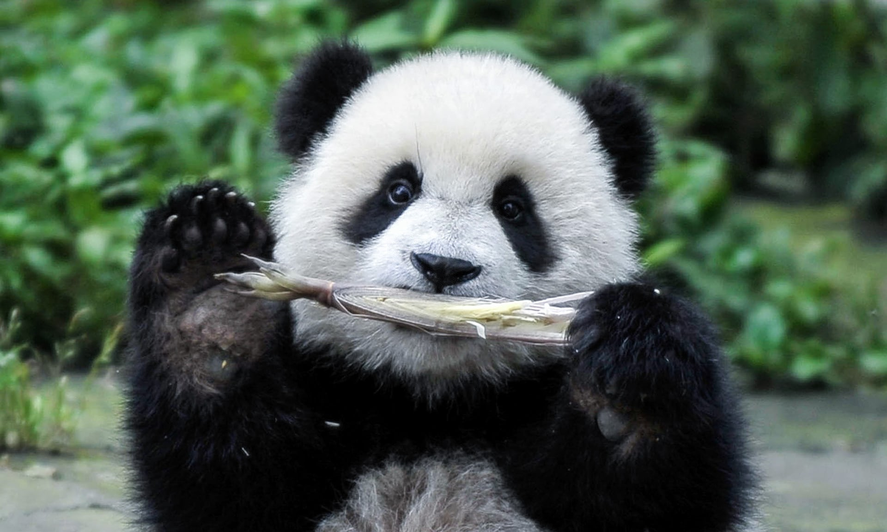
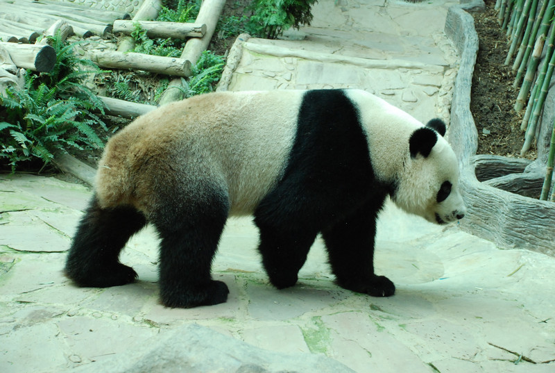

|  |
หรือที่นิยมเรียกว่า หมีแพนด้า เป็นสัตว์เลี้ยงลูกด้วยนมซึ่งปัจจุบันจัดอยู่ในวงศ์หมี(Ursidae) 239 ตัวอยู่ในจีน และอีก 27 ตัวอยู่ในต่างประเทศ มีการคาดการณ์ว่ามีแพนด้าประมาณ 1,590 ตัว ที่อยู่ตามธรรมชาติ ผ่านการวิเคราะห์ดีเอ็นเอ สามารถประมาณการได้ว่าอาจจะมีแพนด้ายักษ์เป็นจำนวนถึง 2,000-3,000 ตัวอาศัยอยู่ตามธรรมชาติ |
|  | ชนิดในไม้ไผ่ที่มันกิน นี่เป็นแหล่งโปรตีนที่สำคัญ อัตราการเกิดต่ำทั้งในป่าและในกรงเลี้ยง เชื่อว่ามีแพนด้ายักษ์เพียง 1,600 ตัว อาศัยอยู่รอดในป่า รูปแบบของกระดูกข้อต่อ หางของแพนด้ายักษ์นั้นสั้นมาก โดยมีความยาวประมาณ 15 เซนติเมตร |